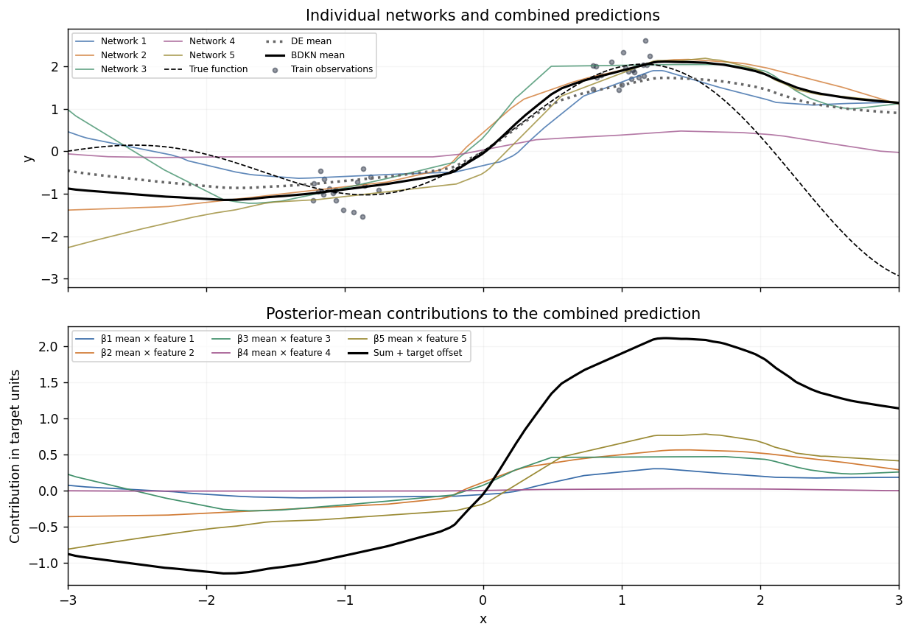
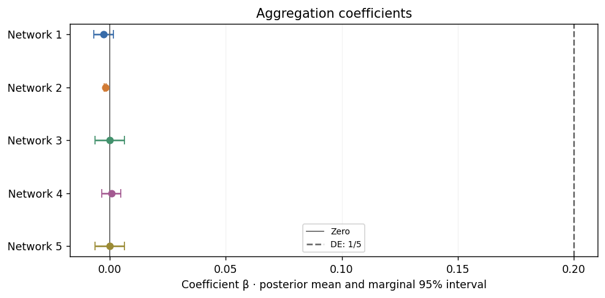
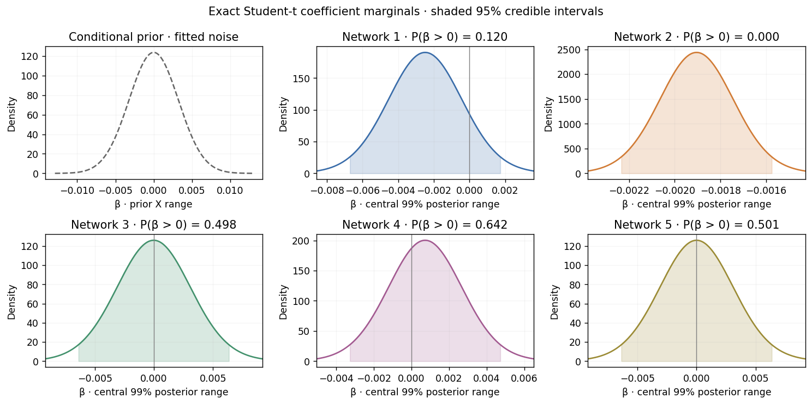
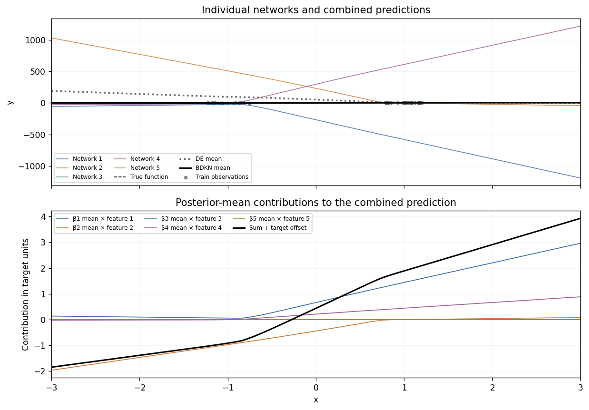
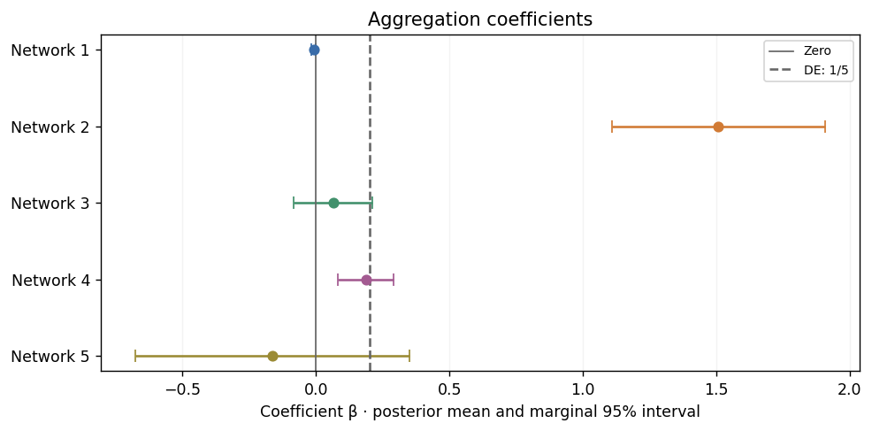
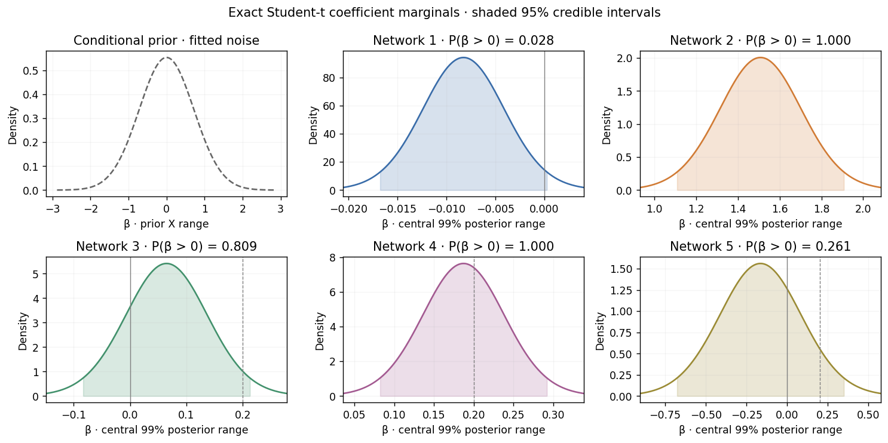
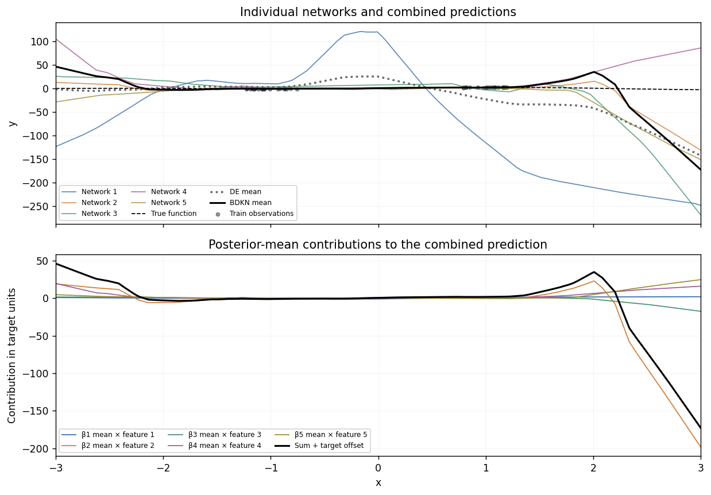
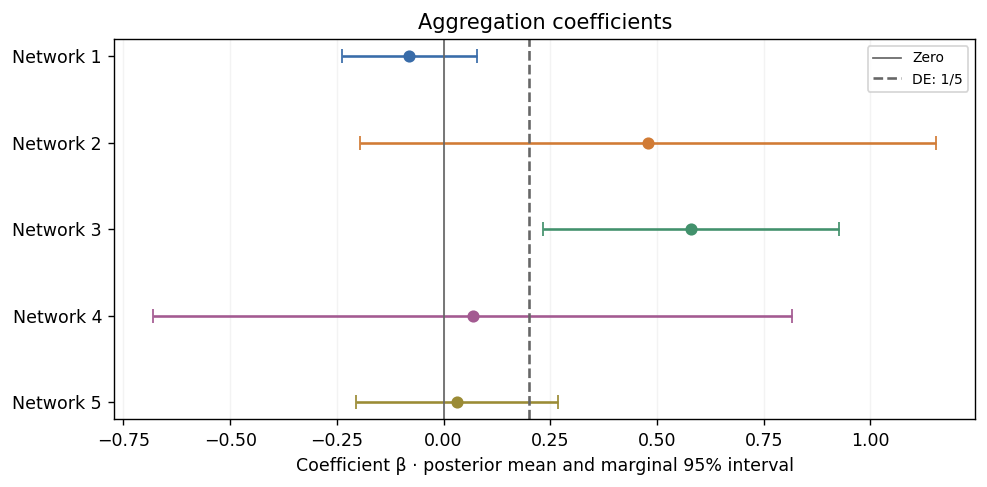
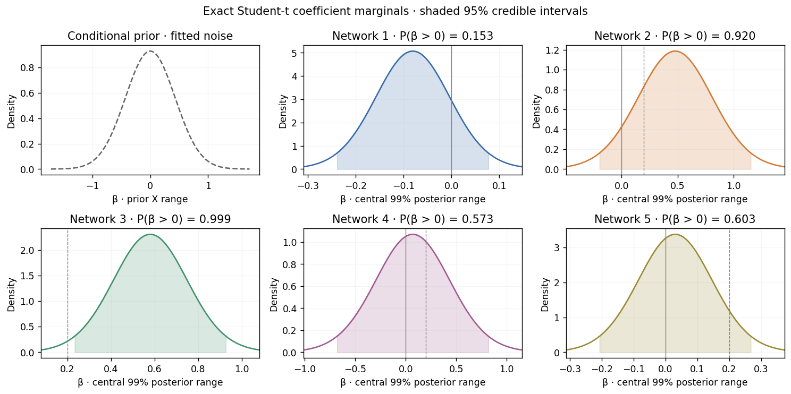
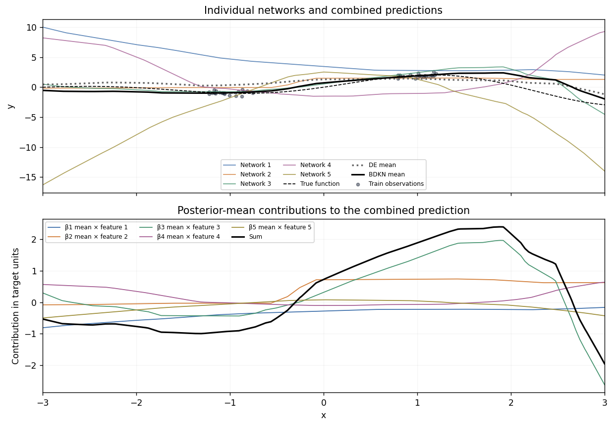

Regression comparison
Download resultsAggregation weights
Coefficients can be negative and need not sum to one. Intervals describe coefficient uncertainty; the dashed reference is DE’s fixed 1/H weight.
BDKN



Each density panel uses its own X range for readability; coefficient intervals above share a common axis. Prior reference conditions on fitted noise. Contribution shares use held-out inputs; test targets are used only for scoring.
| Network | β mean | 95% low | 95% high | P(β > 0) | Contribution share | Test RMSE | Test NLL |
|---|---|---|---|---|---|---|---|
| 1 | 0.15914 | -0.34378 | 0.66206 | 0.73694 | 0.10339 | 1.22604 | 3.28984 |
| 2 | 0.26043 | -0.36725 | 0.88811 | 0.79665 | 0.27520 | 1.50533 | 12.03988 |
| 3 | 0.22915 | -0.27019 | 0.72850 | 0.82038 | 0.21502 | 1.32037 | 9.46759 |
| 4 | 0.05241 | -0.67124 | 0.77606 | 0.55782 | 0.00895 | 1.10368 | 1.55372 |
| 5 | 0.35756 | -0.02672 | 0.74184 | 0.96634 | 0.39743 | 1.54360 | 13.74209 |
Functional repulsion · BDKN



Each density panel uses its own X range for readability; coefficient intervals above share a common axis. Prior reference conditions on fitted noise. Contribution shares use held-out inputs; test targets are used only for scoring.
| Network | β mean | 95% low | 95% high | P(β > 0) | Contribution share | Test RMSE | Test NLL |
|---|---|---|---|---|---|---|---|
| 1 | -0.00249 | -0.00670 | 0.00172 | 0.11964 | 0.52714 | 571.52688 | 12.94594 |
| 2 | -0.00190 | -0.00223 | -0.00158 | 0.00000 | 0.31442 | 468.53182 | 9.40296 |
| 3 | -0.00001 | -0.00637 | 0.00634 | 0.49820 | 0.00002 | 3.75934 | 4.13701 |
| 4 | 0.00073 | -0.00327 | 0.00473 | 0.64245 | 0.15841 | 591.35965 | 11.65746 |
| 5 | 0.00001 | -0.00635 | 0.00636 | 0.50076 | 0.00000 | 1.73102 | 2.06914 |
Weight repulsion · BDKN



Each density panel uses its own X range for readability; coefficient intervals above share a common axis. Prior reference conditions on fitted noise. Contribution shares use held-out inputs; test targets are used only for scoring.
| Network | β mean | 95% low | 95% high | P(β > 0) | Contribution share | Test RMSE | Test NLL |
|---|---|---|---|---|---|---|---|
| 1 | -0.00824 | -0.01674 | 0.00025 | 0.02843 | 0.03036 | 134.89114 | 19.23187 |
| 2 | 1.50848 | 1.10939 | 1.90757 | 1.00000 | 0.66024 | 29.22757 | 8.28951 |
| 3 | 0.06463 | -0.08329 | 0.21255 | 0.80877 | 0.06840 | 62.57562 | 7.84333 |
| 4 | 0.18720 | 0.08232 | 0.29207 | 0.99958 | 0.12737 | 33.76612 | 5.89346 |
| 5 | -0.16371 | -0.67649 | 0.34906 | 0.26122 | 0.11364 | 40.90960 | 10.15689 |
First-order repulsion · BDKN



Each density panel uses its own X range for readability; coefficient intervals above share a common axis. Prior reference conditions on fitted noise. Contribution shares use held-out inputs; test targets are used only for scoring.
| Network | β mean | 95% low | 95% high | P(β > 0) | Contribution share | Test RMSE | Test NLL |
|---|---|---|---|---|---|---|---|
| 1 | -0.08094 | -0.23897 | 0.07710 | 0.15342 | 0.18521 | 5.07075 | 2.88812 |
| 2 | 0.47891 | -0.19632 | 1.15415 | 0.92025 | 0.21762 | 1.41311 | 7.66852 |
| 3 | 0.57972 | 0.23291 | 0.92653 | 0.99918 | 0.42090 | 1.21563 | 1.73730 |
| 4 | 0.06856 | -0.67983 | 0.81696 | 0.57298 | 0.09878 | 4.53729 | 3.31704 |
| 5 | 0.03071 | -0.20633 | 0.26775 | 0.60260 | 0.07749 | 6.07260 | 3.03305 |